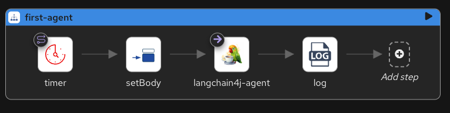

Now that you have a working Camel route, it's time to connect it to a Large Language Model. You'll call an LLM from a Camel route using one of two approaches: the OpenAI component for simple, direct calls, or LangChain4j with Forage for a setup with memory, tools, and guardrails.
The OpenAI component is the simplest way to call an LLM from Camel. It works with OpenAI directly or any OpenAI-compatible API like Ollama. No additional framework is needed.
The LangChain4j Agent component is backed by Forage, which configures AI beans through a properties file. It adds memory, tool support, and guardrails on top of the basic LLM call. Choose this approach when you need conversational context or plan to add tools later.
The route you're about to build is simple. A timer fires once, sets a question as the message body, sends it to an LLM, and logs the response. Here's the flow:
From the workshop root directory, ask your AI assistant to generate the route. Pick the tab matching the approach you chose:
Your generated route should look similar to this:
- route:
id: first-llm
from:
uri: timer:ask
parameters:
repeatCount: 1
steps:
- setBody:
constant: >-
What are the main Enterprise Integration Patterns used
in messaging systems? Answer in 3 bullet points.
- to:
description: Call the LLM
uri: openai:chat-completion
- log:
message: "$\{body}"The openai:chat-completion URI sends the message body to the OpenAI component. No configuration needed in the route. The model, API key, and base URL all live in application.properties:
# Ollama (OpenAI-compatible API)
camel.component.openai.model=granite4:7b-a1b-h
camel.component.openai.baseUrl=http://localhost:11434/v1
camel.component.openai.apiKey=ollama
# Or use OpenAI directly:
# camel.component.openai.model=gpt-5
# camel.component.openai.apiKey=$\{OPENAI_API_KEY}This keeps credentials out of the route. Switch between Ollama and OpenAI by changing the properties file.
- route:
id: first-agent
from:
uri: timer:ask
parameters:
repeatCount: 1
steps:
- setBody:
constant: "What are the main Enterprise Integration Patterns used in messaging systems? Answer in 3 bullet points."
- to:
uri: langchain4j-agent:myAgent
- log:
message: "$\{body}"The langchain4j-agent:myAgent URI sends the message body to an agent identified by myAgent. That name must match a bean configured by Forage and automatically bound in the Camel context registry. The configuration lives in forage-agent-factory.properties:
forage.myAgent.agent.model.kind=ollama
forage.myAgent.agent.model.name=granite4:7b-a1b-h
forage.myAgent.agent.base.url=http://localhost:11434Every property starts with forage.myAgent. That prefix ties the configuration to the myAgent bean referenced in the route.
Note
Forage is optional. You can skip it and create agents with Java beans directly by binding an AgentWithMemory or AgentWithoutMemory instance to the Camel registry.
Open the route.camel.yaml file in VS Code to see it rendered in Kaoto. Here's the LangChain4j route:

Make sure Ollama is running with the model loaded:
Then navigate to the variant you chose and run:
You just connected a Camel route to a Large Language Model for the first time. In the next step, you'll use the LLM to classify data and route messages based on its response.